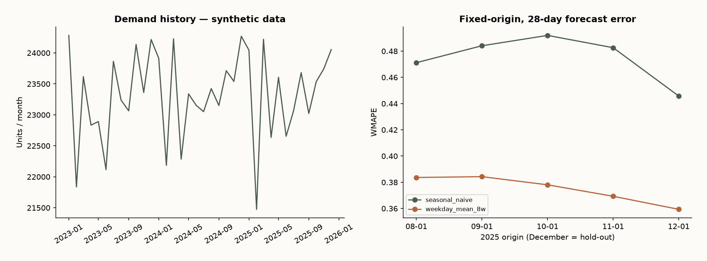

A forecast a small business can operateUn pronóstico que una feria puede operar
Demand planning · Synthetic simulation
Planificación de demanda · Simulación sintética

Business questionPregunta de negocio
With only date, product and demand, can a transparent forecast improve on repeating last week?
Con solo fecha, producto y demanda, ¿un pronóstico transparente mejora repetir la última semana?
Method & validationMétodo y validación
Generate 140,288 daily records for 128 products with a fixed seed. Compare seasonal naive with an eight-week weekday mean over four validation origins; reserve December for one final 28-day hold-out. Forecasts remain fixed at each origin.
Generar 140.288 registros diarios de 128 productos con semilla fija. Comparar naive estacional con promedio de ocho semanas por día, en cuatro orígenes de validación; reservar diciembre como prueba final de 28 días. Cada pronóstico queda fijo en su origen.
What the data saysQué dicen los datos
The weekday mean reduces held-out WMAPE from 44.6% to 35.9%: a 19.4% relative reduction. 69 products enter volume class A, including the item crossing the 80% threshold.
El promedio por día reduce WMAPE de prueba de 44,6% a 35,9%: una reducción relativa de 19,4%. 69 productos quedan en clase A por volumen, incluyendo el que cruza el umbral de 80%.
RecommendationRecomendación
Start with the weekday mean as a planning input. Collect stock availability, lead times and actual transactions before recommending reorder quantities or monetizing savings.
Usar el promedio por día como insumo de planificación. Recopilar disponibilidad, plazos y transacciones reales antes de recomendar cantidades de reposición o monetizar ahorros.
Limits of the evidenceLímites de la evidencia
All records are synthetic, not reconstructed client evidence. No prices, lost-sales observations, stock, shelf life or lead times. Volume classes are not revenue ABC. Results describe this generator, not a real business or service-level improvement.
Todos los registros son sintéticos, no evidencia reconstruida de un cliente. Sin precios, ventas perdidas, stock, vida útil ni plazos. La clasificación por volumen no es ABC de ingresos. Resultados de este generador, no de un negocio real ni de mejora de servicio.